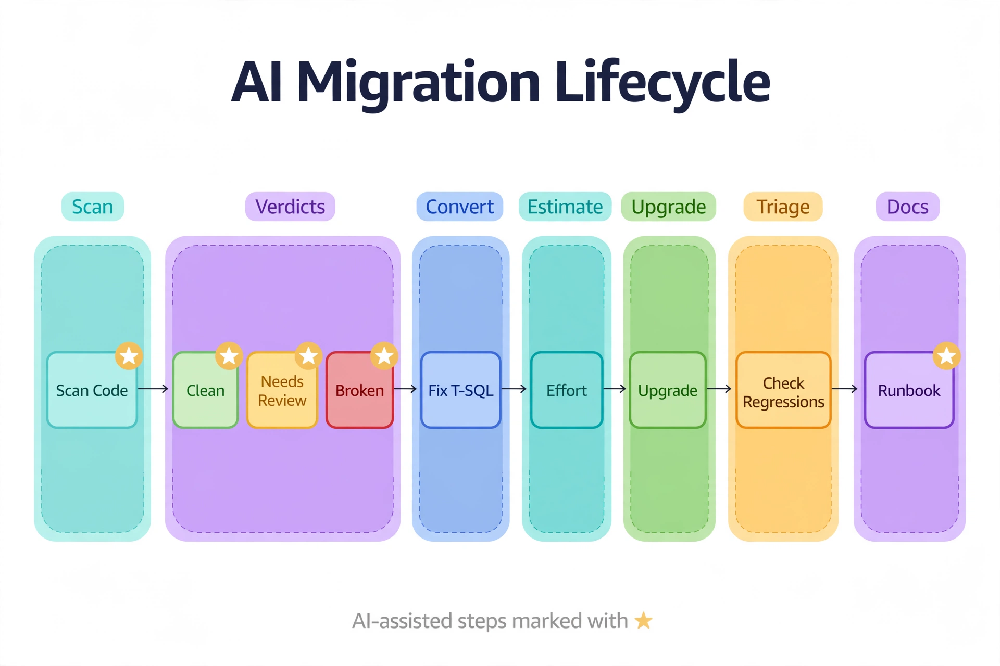

Chapter 29: AI-Assisted Migrations and Upgrades
Migration mechanics — how to move a database, how to fail over an availability group, how to cut over with minimal downtime — are Book 5's territory, and this chapter does not repeat them. This chapter is about where AI changes the economics of a migration or version upgrade: the assessment phase that used to take weeks of manual code review, the T-SQL conversion work that used to be done by hand, and the post-upgrade regression triage that used to drown DBAs in Query Store diffs. In each of these, AI does not replace the migration plan — it compresses the labor inside it.
---
AI Compatibility Assessment: Scanning the Codebase

Read it left to right. The teal Scan stage inventories every module in the database — the AI-assisted part is just the inventory, which is thorough rather than clever. The violet Verdicts stage is where the model earns its keep: every object gets a Clean, Needs Review, or Broken verdict, color-coded so the migration lead sees the shape of the work at a glance. Conversion, estimation, and the upgrade itself follow, with regression triage catching the plan changes the upgrade introduced. The purple Runbook stage closes the loop by documenting what was actually done. The gold stars mark AI-assisted steps — notice the model never performs the upgrade or the triage alone. The key insight: the AI's job is triage and drafting, which concentrates expensive human judgment on the amber and red objects instead of spreading it evenly across ten thousand green ones.
Every upgrade assessment asks the same question: what in our code breaks, or behaves differently, on the target version? The traditional answer is a mix of Data Migration Assistant output and grep. The AI-assisted answer feeds your entire T-SQL codebase — every stored procedure, function, trigger, and view definition from sys.sql_modules — to an LLM alongside the target version's breaking-change list, and asks for a per-object verdict: clean, needs review, or broken, with the specific construct cited.
import pyodbc, json
def extract_modules(conn) -> list[dict]:
"""Pull every programmable object definition for AI assessment."""
return [
{"schema": r[0], "name": r[1], "type": r[2], "definition": r[3]}
for r in pyodbc.connect(conn).execute("""
SELECT OBJECT_SCHEMA_NAME(m.object_id),
OBJECT_NAME(m.object_id),
o.type_desc,
m.definition
FROM sys.sql_modules m
JOIN sys.objects o ON o.object_id = m.object_id
WHERE m.definition IS NOT NULL
AND o.is_ms_shipped = 0
""").fetchall()
]
COMPAT_ASSESS_PROMPT = """
You are a SQL Server upgrade assessor. Target version: SQL Server 2022
(compatibility level 160), upgrading from SQL Server 2019 (level 150).
Classify the T-SQL module below as CLEAN, REVIEW, or BROKEN.
Flag: discontinued features, breaking behavior changes between 150 and 160
(e.g., cardinality estimator changes affecting hints, STRING_AGG behavior,
legacy outer join syntax *= / =*, SET ROWCOUNT in DML statements,
TEXT/NTEXT/IMAGE usage, deprecated DBCC commands, non-ANSI GROUP BY).
Respond as JSON:
{"verdict": "CLEAN|REVIEW|BROKEN",
"findings": [{"line_excerpt": "", "issue": "",
"remediation": ""}]}
If CLEAN, findings is an empty array. Be strict: false REVIEWs are cheap,
missed BROKENs are expensive.
"""
def assess_module(llm_client, module: dict) -> dict:
resp = llm_client.messages.create(
model="claude-opus-4-5", max_tokens=1500,
system=COMPAT_ASSESS_PROMPT,
messages=[{"role": "user", "content":
f"-- {module['schema']}.{module['name']} ({module['type']})\n"
+ module["definition"][:12000]}],
)
result = json.loads(resp.content[0].text)
result.update({"schema": module["schema"], "name": module["name"],
"type": module["type"]})
return result The prompt's last line is the important one: tune for recall, not precision. A human reviews every REVIEW and BROKEN verdict anyway, so false positives cost minutes while a missed breaking change costs a rollback. Run the assessment in parallel batches, store verdicts in a table, and you have converted a three-week manual code review into an overnight job plus two days of human review on the flagged subset. Pair this with the Data Migration Assistant's rule-based findings — DMA catches the known-knowns deterministically; the LLM catches the patterns no rule was written for.
---
LLM-Assisted T-SQL Code Conversion
Assessment produces a remediation backlog: legacy outer joins to rewrite as ANSI, SET ROWCOUNT in DML to replace with TOP, TEXT columns to migrate to VARCHAR(MAX), deprecated system procedures to swap out. This is mechanical translation work — exactly what LLMs do well — but "the model rewrote it" is not a correctness argument. The pattern that makes AI conversion trustworthy is a verification loop: the LLM proposes the rewrite, then automation proves the rewrite parses and preserves semantics before a human ever looks at it.
CONVERT_PROMPT = """
Rewrite the T-SQL module below to remove the deprecated constructs listed.
Rules:
- Preserve exact semantics: same result sets, same error behavior, same
transaction boundaries. When semantics are ambiguous, prefer the safer
interpretation and note it in 'notes'.
- Use only features available at compatibility level 160.
- Do not reformat unrelated code. Minimal diff.
Respond as JSON:
{"rewritten_sql": "",
"changes": [""],
"notes": [""]}
Deprecated constructs to remove: {constructs}
"""
def verify_rewrite(conn_string: str, schema: str, name: str,
rewritten_sql: str) -> dict:
"""
Verification loop: the rewrite must (1) parse, (2) preserve the
parameter/result shape of the original. Runs in a scratch database
against a restored schema-only copy — never in production.
"""
conn = pyodbc.connect(conn_string)
issues = []
try:
with conn.cursor() as cur:
# 1. Parse check: NOEXEC validates syntax without executing
cur.execute("SET NOEXEC ON;" + rewritten_sql + ";SET NOEXEC OFF;")
# 2. Shape check: compare result-set metadata old vs new
cur.execute("""
SELECT name, system_type_id, max_length
FROM sys.dm_exec_describe_first_result_set(?, NULL, 1)
""", (rewritten_sql,))
new_shape = cur.fetchall()
# (original shape captured beforehand the same way)
except Exception as e:
issues.append(f"parse/shape failure: {e}")
return {"ok": not issues, "issues": issues} The SET NOEXEC ON parse check plus sys.dm_exec_describe_first_result_set shape comparison catches the two cheapest failure classes — syntax errors and changed result shapes — automatically. What it cannot catch is subtle semantic drift, which is why every converted module still gets human review with the model's changes and notes arrays as the review guide. In practice this pipeline converts 70–80% of remediation items without human edits; the reviewer's job shifts from rewriting code to auditing judgment calls the model flagged itself.
---
AI Effort Estimation from Codebase Analysis
Migration timelines are usually negotiated from gut feel. AI gives you a defensible estimate: classify every object by remediation complexity (clean, mechanical rewrite, semantic judgment required, architectural rework), weight by object size and dependency depth from sys.sql_expression_dependencies, and sum. The LLM does the classification; the dependency graph does the weighting. An object with forty dependents that needs a semantic rewrite is not a one-hour task, and the estimate should say so.
Feed the classified backlog to the model once more and ask for a sequenced remediation plan: dependency order, parallelizable batches, and the critical path. This is planning assistance, not project management — the output is a starting sequence your team adjusts, but it is a sequence grounded in the actual dependency graph rather than someone's memory of it. Re-run the estimator after each remediation sprint; the burn-down of REVIEW/BROKEN verdicts is the most honest migration progress metric you will get.
---
Post-Upgrade Regression Triage with Query Store
The upgrade is done, compatibility level is raised, and Query Store shows forty queries slower than their pre-upgrade baselines. Triaging forty regressions by hand is a week of work. The AI leverage: aggregate the regressed queries by pattern — same tables, same plan-shape change, same wait type shift — and have the LLM summarize each cluster with a likely cause and a recommended first action, using the Chapter 10 self-healing pattern scoped to the upgrade window.
-- Regressed queries since the compat-level change, clustered for AI triage
-- @cutover: the datetime the compatibility level was raised
SELECT
qsqt.query_sql_text,
qsq.query_id,
pre.avg_duration / 1000.0 AS pre_upgrade_avg_ms,
post.avg_duration / 1000.0 AS post_upgrade_avg_ms,
ROUND(post.avg_duration * 1.0 / NULLIF(pre.avg_duration, 0), 2) AS slowdown_factor,
post.avg_logical_io_reads AS post_avg_reads,
pre.avg_logical_io_reads AS pre_avg_reads,
ws.wait_category_desc AS dominant_wait_category
FROM sys.query_store_query qsq
JOIN sys.query_store_query_text qsqt ON qsqt.query_text_id = qsq.query_text_id
CROSS APPLY (
SELECT AVG(rs.avg_duration) AS avg_duration,
AVG(rs.avg_logical_io_reads) AS avg_logical_io_reads
FROM sys.query_store_plan p
JOIN sys.query_store_runtime_stats rs ON rs.plan_id = p.plan_id
JOIN sys.query_store_runtime_stats_interval i
ON i.runtime_stats_interval_id = rs.runtime_stats_interval_id
WHERE p.query_id = qsq.query_id AND i.start_time < @cutover
) pre
CROSS APPLY (
SELECT AVG(rs.avg_duration) AS avg_duration,
AVG(rs.avg_logical_io_reads) AS avg_logical_io_reads
FROM sys.query_store_plan p
JOIN sys.query_store_runtime_stats rs ON rs.plan_id = p.plan_id
JOIN sys.query_store_runtime_stats_interval i
ON i.runtime_stats_interval_id = rs.runtime_stats_interval_id
WHERE p.query_id = qsq.query_id AND i.start_time >= @cutover
) post
OUTER APPLY (
SELECT TOP (1) ws.wait_category_desc
FROM sys.query_store_wait_stats ws
JOIN sys.query_store_plan p ON p.plan_id = ws.plan_id
WHERE p.query_id = qsq.query_id
GROUP BY ws.wait_category_desc
ORDER BY SUM(ws.total_query_wait_time_ms) DESC
) ws
WHERE post.avg_duration > pre.avg_duration * 1.5
AND pre.avg_duration > 0
ORDER BY slowdown_factor DESC;Hand the result set to the LLM in batches grouped by dominant wait category and table set, and ask for per-cluster triage: likely cause (cardinality estimator change, missing statistics after the upgrade, a plan forced under the old compat level), and the first corrective action (update statistics, force the pre-upgrade plan via sp_query_store_force_plan, or escalate). The model is not diagnosing from vibes — every cluster comes with pre/post durations, I/O deltas, and the dominant wait category. Forty regressions become six clusters with six recommended first actions, and the DBA starts from the model's triage instead of a blank Query Store grid.
---
Generating the Upgrade Runbook from Inventory
The final AI leverage point is the upgrade runbook itself. A good runbook is specific to the environment: which AGs need failover sequencing, which databases have Query Store enabled for baselining, which jobs must be disabled during cutover, what the rollback trigger conditions are. An LLM given a structured inventory — AG topology from sys.availability_groups and sys.dm_hadr_availability_replica_states, SQL Agent jobs, linked servers, compat levels, the assessment verdict table from this chapter's first section — can draft that runbook: sequenced steps, per-step verification queries, rollback triggers, and owner assignments left blank for the team to fill.
Treat the draft as a starting point a senior DBA red-lines, not as an executable plan. Its value is completeness: the model does not forget to include "re-enable the ETL jobs" or "verify Query Store capture mode post-upgrade" the way a human drafting at midnight does. Every red-line correction goes back into the prompt template for the next upgrade, so the runbook generator improves the way checklists improve — by accumulating the team's scar tissue.
---
Key Takeaways
QueryOptimizer — Self-Hosted SQL Performance Workbench
EXPLAIN visualizer · Index advisor · Slow query dashboard · SQL Server
Test yourself on this chapter
5 questions · instant scoring · explanations included